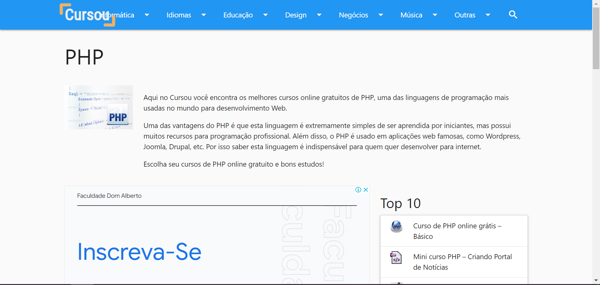
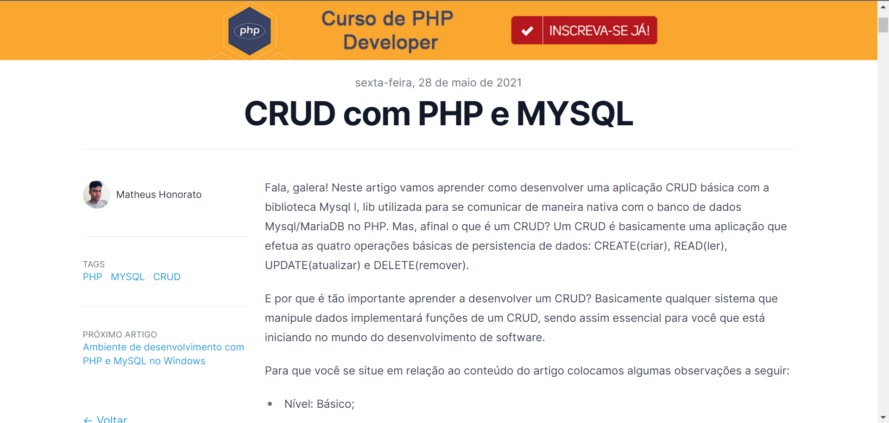
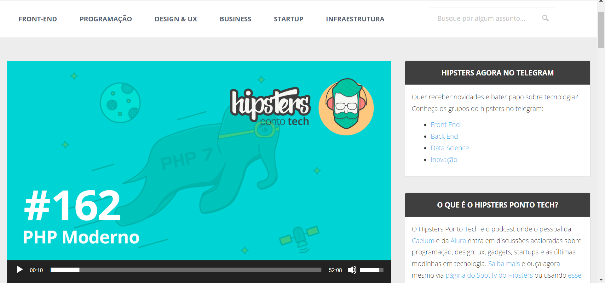

Este site tem um otimo potencial e procura trazer as melhores formas de apresentar/ensinar
de forma mais descomplicada sobre como funciona php
Este video mostra e ensina um projeto do zero, trazendo ensinamentos
e pratica de back end com a maior clareza possivel
Aqui ele tras um tutorial por escrito, fazendo
um passo a passo descomplicado para aprender crud php
nesse podcast ele explica como funciona o php detalhadamente
